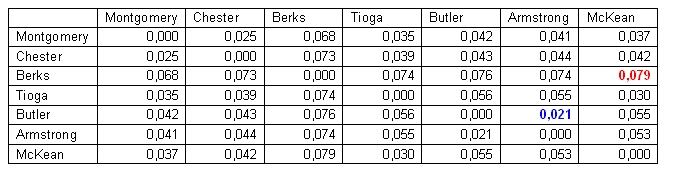
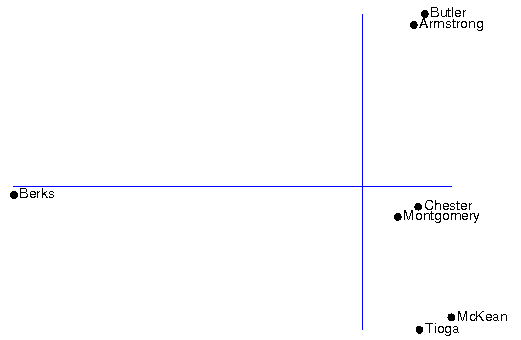

The purpose of MDS is to provide a visual representation of the pattern of distances among a set of elements. The pair-wise aggregate linguistic distances between all sites are analyzed, and a set of points in a low-dimensional space is returned so that the distances between the points are approximately equal to the original distances.
When applying MDS to dialect data three dimensions generally explain at least around 90% of the total variance in the data (for example, Heeringa 2004; Prokic and Nerbonne 2008; Leinonen 2010), which means that three dimensions are generally enough for describing dialectal variation. In MDS to three dimensions, positions in a three-dimensional space are assigned to all varieties included in the analysis. One way of displaying the results is to plot the objects in a Cartesian coordinate system. The closer to each other two objects are in the plot the smaller the linguistic difference.
In the following example we use a small data set of seven counties in Pennsylvania. The data is from the Linguistic Atlas of the Middle and South Atlantic States (LAMSAS). The table below shows the distance matrix with the aggregate linguistic distance between seven sites:
The smallest one of the pairwise distances is the one between the Butler and Armstrong counties (0.021), while the largest distance (0.079) is found between Berks and McKean.
The figure below shows the results of multidimensional scaling of the distances in the distance matrix in a two-dimensional plot.
In the distance matrix the smallest distances was found between Armstrong and Butler, which also are closest to each other in the plot. Small distances in the distance matrix are also found between Chester and Montgomery as well as between McKean and Tioga. The three mentioned pairs of sites form three small clusters in the plot. The original distance matrix shows large distances between Berks and all other six sites. These large distances are reflected in the MDS plot where Berks is very distant form the other sites. While the distance matrix only comprises the distances between pairs of sites, the MDS results displays the relationships between all seven sites simultaneously.
The x-axis in the plot represents the first dimension, and the y-axis the second dimension. However, in MDS the directions of the axes are arbitrary and may be rotated, so if required the axes may be swapped.
The two-dimensional MDS plot is found in Gabmap at Multidimensional Scaling - mds plots.